Manual do App Escala
Guia simples para cadastrar acólitos, missas, gerar escalas, oficializar serviços e fazer backup dos dados.
Resumo das Regras
| Área | Regra |
|---|---|
| Acólitos | Cadastre nome, disponibilidade e restrições corretamente; esses dados decidem quem pode entrar em cada missa. |
| Padrinhos | Use para acólitos que ainda precisam servir acompanhados; o sistema tenta escalar padrinho e afilhado juntos e bloqueia auto-padrinho ou ciclos. |
| Indisponibilidade | Datas indisponíveis têm prioridade: o acólito não será escolhido naquela data, mesmo que sirva no dia da semana. |
| Igrejas | A igreja precisa estar cadastrada antes da missa, pois ela aparece na escala e nos arquivos gerados. |
| Missas | Somente missas ativas entram na geração; quantidade de acólitos, data e horário controlam a seleção. |
| Missas inativas | Inativar tira a missa das próximas escalas sem apagar o histórico; o checkbox Ativo permite reativar quando necessário. |
| Gerar escala | O sistema cruza missas ativas, disponibilidade, indisponibilidades, padrinhos e repetição de acólitos para montar a escala. |
| Alertas | Se faltar acólito em alguma missa, aparece aviso e exclamação vermelha; revise antes de oficializar. |
| Edição manual | Alterar nomes manualmente pode bloquear a oficialização, porque o sistema perde a certeza de quais acólitos devem receber a contagem. |
| PDF e JSON | PDF é para impressão/compartilhamento; JSON é o arquivo mais seguro para importar a escala depois mantendo os vínculos. |
| Importar escala | Prefira JSON; ao importar PDF, nomes não encontrados no cadastro podem impedir a oficialização. |
| Oficialização | Depois de oficializar, o sistema soma missas servidas dos acólitos e inativa as missas daquela escala. |
| Backup | Exportar guarda uma cópia dos dados; importar substitui os dados atuais e reinicia o sistema. |
Visão Geral
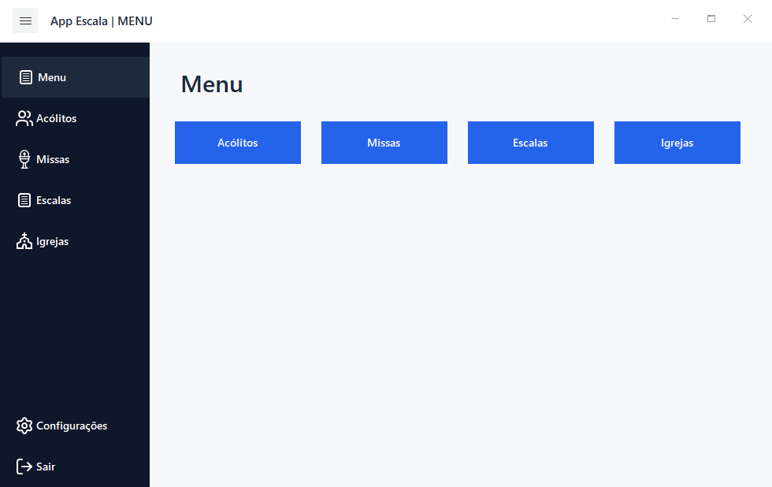
Acólitos
Cadastro, edição, disponibilidade e dias em que não pode servir.
Missas
Cadastro de igreja, data, horário, descrição, quantidade e status ativo.
Escalas
Geração automática, edição manual, exportação e oficialização.
Configurações
Backup, importação e opção de gerar JSON junto com o PDF.
Acólitos
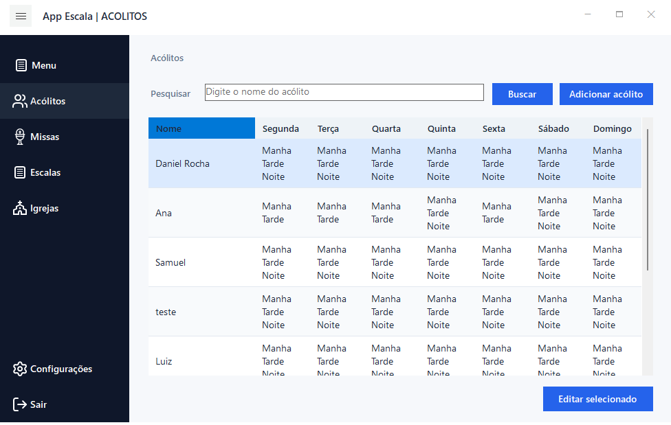
Para que serve
- Consultar todos os acólitos cadastrados.
- Ver os dias e turnos em que cada acólito pode servir.
- Pesquisar acólitos pelo nome.
- Abrir a edição do acólito selecionado.
Regras principais
- O nome do acólito não pode ficar vazio.
- Não pode existir outro acólito com o mesmo nome.
- Um acólito pode ter um padrinho para acompanhar suas primeiras missas.
Padrinhos
- Use o padrinho quando um acólito ainda precisa servir acompanhado antes de ficar independente.
- Informe quantas missas acompanhadas são necessárias no cadastro ou na edição do acólito.
- Ao gerar a escala, o sistema tenta colocar o acólito junto com o padrinho quando os dois estão disponíveis.
- O acólito não pode ser padrinho dele mesmo.
- O sistema bloqueia ciclos, por exemplo: João é padrinho de Pedro e Pedro é padrinho de João.
Novo Acólito
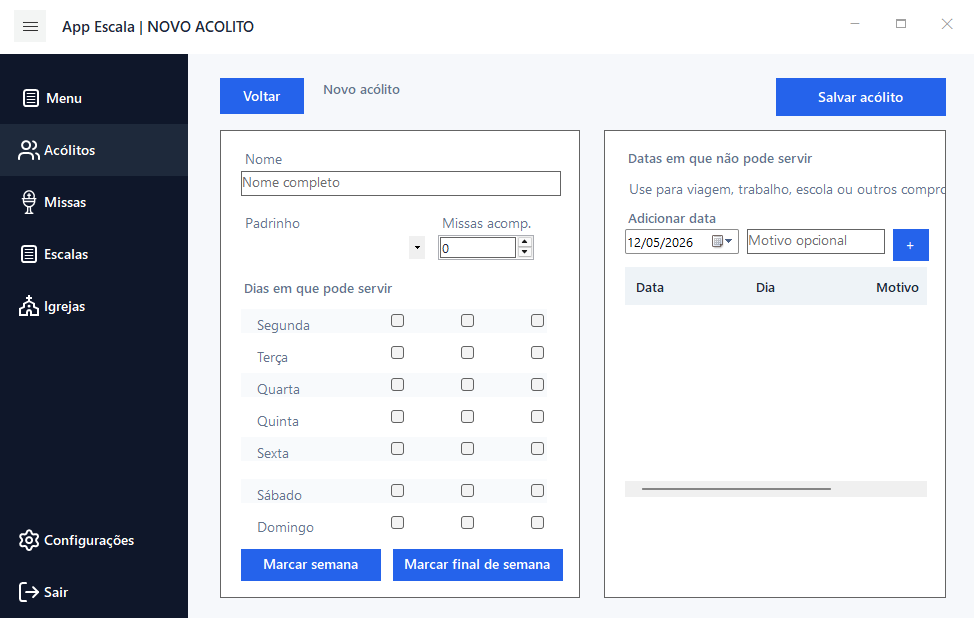
Como cadastrar
- Informe o nome.
- Selecione um padrinho, se houver.
- Informe quantas missas acompanhadas são necessárias.
- Marque os dias e turnos em que o acólito pode servir.
- Adicione datas específicas em que ele não pode servir, se necessário.
Datas indisponíveis são usadas para impedir que o acólito seja escalado naquele dia.
Editar Acólito
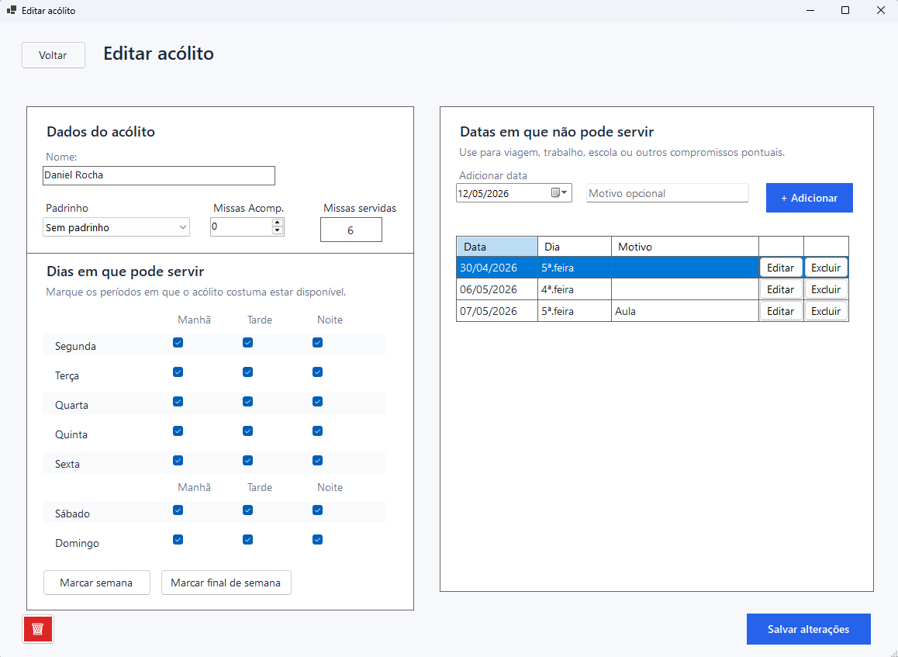
O que pode alterar
- Nome.
- Padrinho.
- Quantidade de missas acompanhadas necessárias.
- Dias e turnos disponíveis.
- Datas em que não pode servir.
Acompanhamento
- Se o acólito tem padrinho e ainda não completou as missas necessárias, ele precisa de acompanhamento.
- Ao gerar a escala, o sistema tenta colocar o acólito junto com o padrinho quando ambos estão disponíveis.
Missas
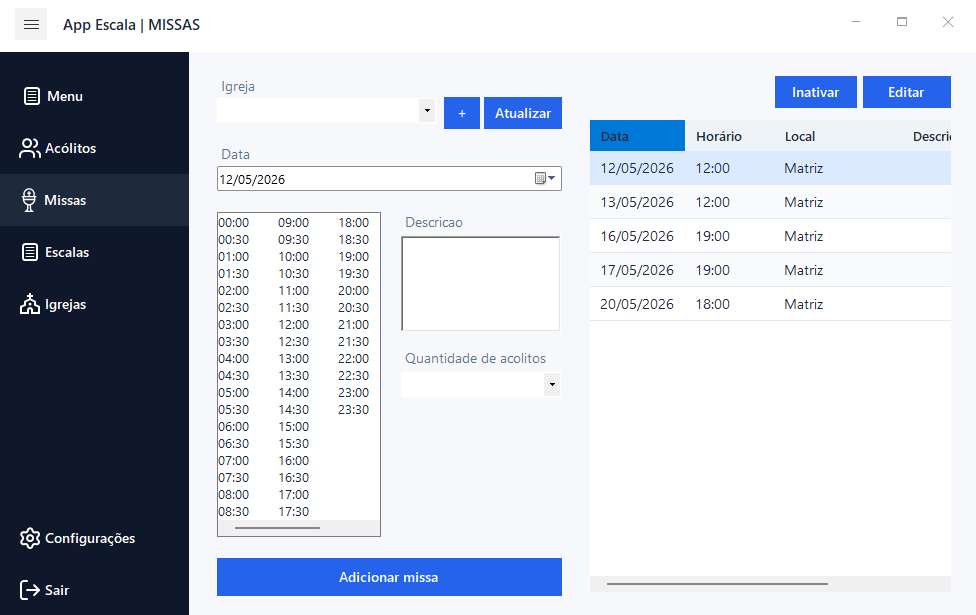
Como cadastrar
- Selecione a igreja.
- Escolha a data.
- Selecione o horário.
- Digite uma descrição, se necessário.
- Escolha a quantidade de acólitos.
Status Ativo
- Somente missas ativas entram na geração da escala.
- Missas antigas são inativadas automaticamente, não apagadas.
- O checkbox Ativo permite reativar ou inativar uma missa.
Editar Missa
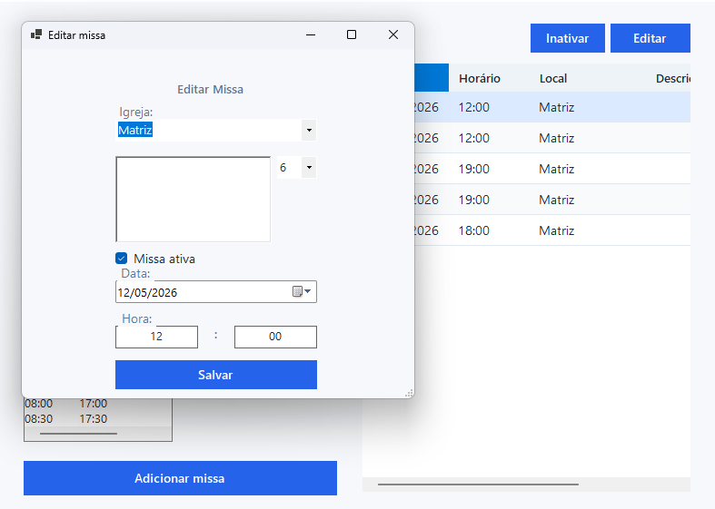
O que pode alterar
- Igreja.
- Data e horário.
- Descrição.
- Quantidade de acólitos.
- Status da missa: ativa ou inativa.
Igrejas
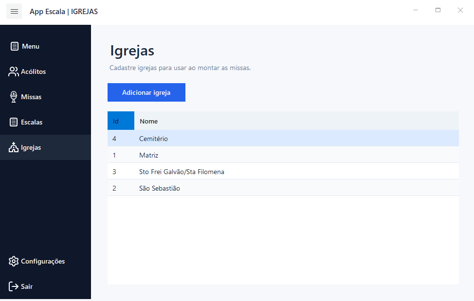
Para que serve
- Cadastrar igrejas usadas nas missas.
- Listar igrejas existentes.
- Usar a igreja cadastrada no cadastro de missas.
Gerar Escala
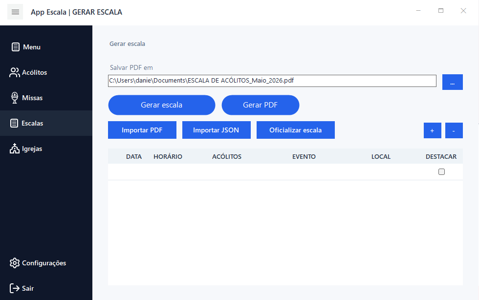
Como funciona
- Clique em Gerar escala.
- O sistema usa apenas missas ativas.
- O sistema considera dia, horário, turno e indisponibilidades.
- O sistema tenta evitar repetir os mesmos acólitos na escala.
- Se um acólito precisa de acompanhamento, o sistema tenta escalar o padrinho junto.
Alerta de falta de acólitos
- Se uma missa tiver menos acólitos que o solicitado, aparece um aviso.
- A linha da missa fica marcada com uma exclamação vermelha.
- O botão vermelho com exclamação permite abrir o aviso novamente.
Quando houver alerta, revise a missa antes de oficializar a escala.
Editar Escala Manualmente
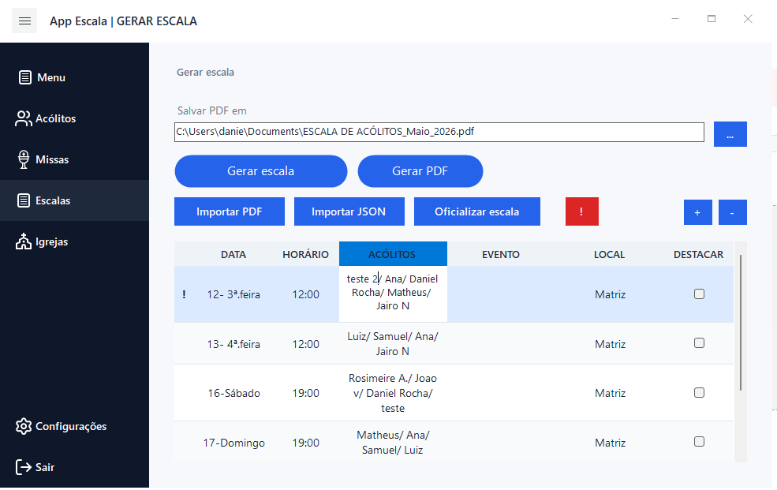
O que pode fazer
- Editar textos diretamente na grade.
- Adicionar linhas.
- Remover linhas.
- Selecionar data com duplo clique na coluna de data.
Se editar manualmente os nomes dos acólitos, o sistema bloqueia a oficialização para evitar somar missas servidas de forma errada.
Gerar PDF e JSON
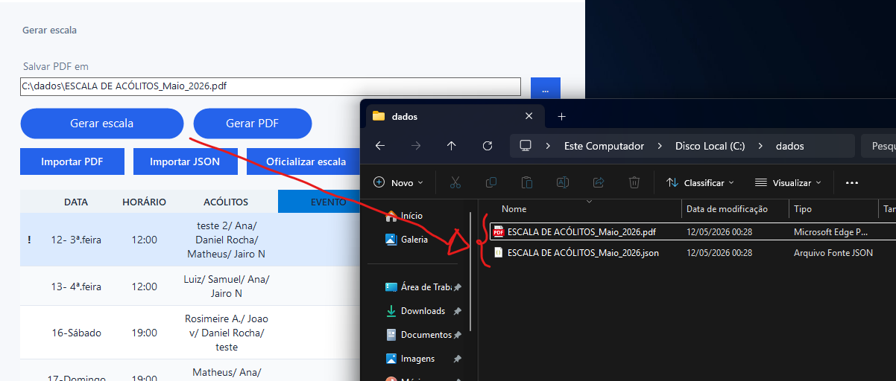
- Escolha onde salvar o arquivo.
- Clique em Gerar PDF.
- O PDF usa os dados que estão na grade da escala.
JSON
- Quando a opção estiver ativa, o sistema gera um JSON junto com o PDF.
- O JSON ajuda a importar a escala novamente mantendo os vínculos dos acólitos.
Importar Escala
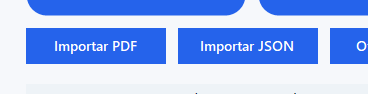
Importar JSON
- Use quando tiver o arquivo JSON gerado pelo próprio sistema.
- É a forma mais segura de recuperar uma escala.
Importar PDF
- O sistema tenta ler os nomes dos acólitos do PDF.
- Se algum nome não existir no cadastro, a oficialização fica bloqueada.
Oficializar Escala
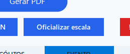
O que acontece
- O sistema soma missas servidas para os acólitos escalados.
- As missas da escala são inativadas.
- Missas inativadas não entram em uma nova geração de escala.
Oficialize somente depois de revisar a escala final.
Configurações e Backup
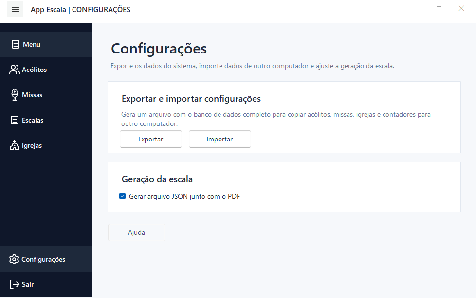
Exportar configurações
- Cria um arquivo de backup com os dados do sistema.
- Use para copiar os dados para outro computador ou guardar uma cópia de segurança.
Importar configurações
- Substitui os dados atuais pelo arquivo escolhido.
- Depois da importação, o sistema reinicia para carregar os dados importados.
Antes de importar um backup, exporte uma cópia dos dados atuais.